SiPANN#
We can also leverage the sipann compact model library.
SIPANN provides with a linear regression fit from mode solver simulations to compute the Sparameters.
Straight#
[1]:
import numpy as np
import matplotlib.pyplot as plt
import gdsfactory as gf
import gdsfactory.simulation.sipann as gs
def pltAttr(x, y, title=None, legend="upper right", save=None):
if legend is not None:
plt.legend(loc=legend)
plt.xlabel(x)
plt.ylabel(y)
if title is not None:
plt.title(title)
if save is not None:
plt.savefig(save)
s = gs.straight(width=0.5)
2022-04-29 12:51:57.951 | INFO | gdsfactory.config:<module>:52 - Load '/home/runner/work/gdsfactory/gdsfactory/gdsfactory' 5.3.4
2022-04-29 12:51:59.645297: W tensorflow/stream_executor/platform/default/dso_loader.cc:64] Could not load dynamic library 'libcudart.so.11.0'; dlerror: libcudart.so.11.0: cannot open shared object file: No such file or directory
2022-04-29 12:51:59.645333: I tensorflow/stream_executor/cuda/cudart_stub.cc:29] Ignore above cudart dlerror if you do not have a GPU set up on your machine.
[2]:
hr = gs.straight(wg_width=0.45, length_x=20.0)
width = np.linspace(300, 500, 100)
wavelength = 1550
hr.update(width=width)
t = hr.predict(wavelength)
title = "Straight $\lambda=1550$ 20um long"
plt.figure(figsize=(15, 5))
plt.subplot(121)
plt.plot(width, np.abs(t) ** 2, label="t")
pltAttr("width (nm)", "|S|", title)
plt.subplot(122)
plt.plot(width, -np.unwrap(np.angle(t)), label="t")
pltAttr("width (nm)", "Phase (rad)", title)
/usr/share/miniconda/envs/anaconda-client-env/lib/python3.9/site-packages/SiPANN/scee.py:1871: UserWarning: Width is less than 400nm, may produce invalid results
warnings.warn(
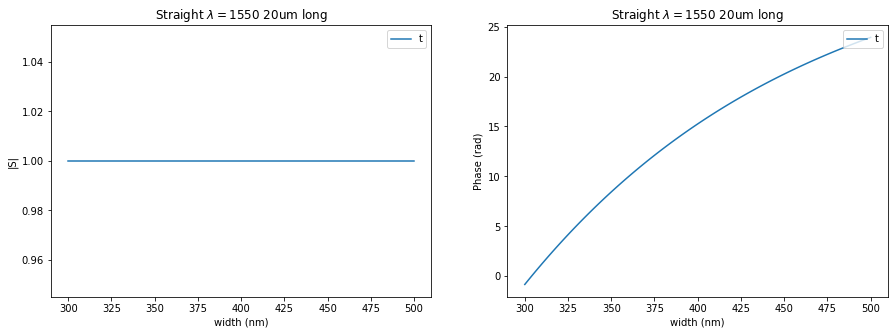
Coupler ring#
[3]:
# Lets look at the layout of a coupler_ring
gf.components.coupler_ring()
coupler_ring: uid 1, ports ['o2', 'o1', 'o3', 'o4'], aliases [], 0 polygons, 3 references

[3]:
coupler_ring: uid 1, ports ['o2', 'o1', 'o3', 'o4'], aliases [], 0 polygons, 3 references
[4]:
hr = gs.coupler_ring()
r = np.linspace(5000, 50000, 100)
wavelength = 1550
hr.update(radius=r)
k = hr.predict((1, 4), wavelength)
t = hr.predict((1, 3), wavelength)
plt.figure(figsize=(15, 5))
plt.subplot(121)
plt.plot(r / 1e3, np.abs(k) ** 2, label="k")
plt.plot(r / 1e3, np.abs(t) ** 2, label="t")
pltAttr("Radius (um)", "Magnitude Squared", "HalfRing $\lambda=1550$")
plt.subplot(122)
plt.plot(r / 1e3, np.unwrap(np.angle(k)), label="k")
plt.plot(r / 1e3, -np.unwrap(np.angle(t)), label="t")
pltAttr("Radius (um)", "Phase (rad)", "HalfRing $\lambda=1550$")
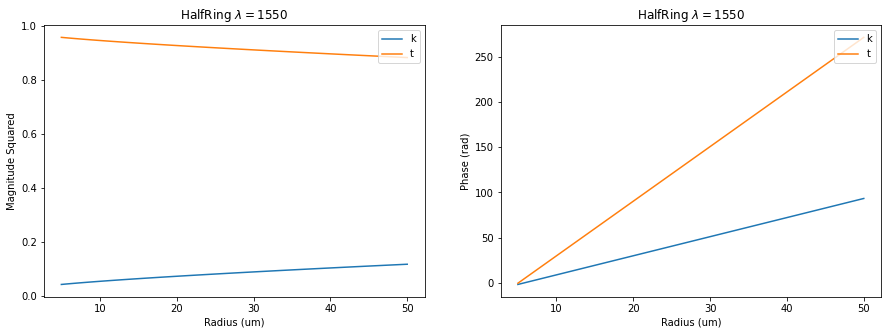
[5]:
hr = gs.coupler_ring(width=0.45, length_x=20.0)
gap = np.linspace(200, 500, 100)
wavelength = 1550
hr.update(gap=gap)
k = hr.predict((1, 4), wavelength)
t = hr.predict((1, 3), wavelength)
title = "Half ring coupler $\lambda=1550$ length=20um 450nm waveguides"
plt.figure(figsize=(15, 5))
plt.subplot(121)
plt.plot(gap, np.abs(k) ** 2 * 100, label="k")
plt.plot(gap, np.abs(t) ** 2 * 100, label="t")
pltAttr("gap (nm)", "Coupling (%)", title)
plt.subplot(122)
plt.plot(gap, np.unwrap(np.angle(k)), label="k")
plt.plot(gap, -np.unwrap(np.angle(t)), label="t")
pltAttr("gap (nm)", "Phase (rad)", title)
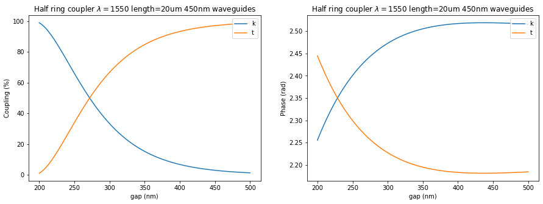
[6]:
plt.figure(figsize=(15, 5))
plt.subplot(121)
plt.plot(gap, np.abs(k) ** 2 * 100, label="k")
pltAttr("gap (nm)", "Coupling (%)", "HalfRing $\lambda=1550$ 20um straight")
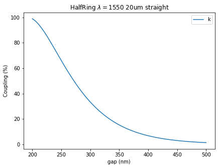
Coupler#
Model for evanescent coupler
[7]:
gap = 0.236
length = 20.0
width = 0.5
dx = 5.0
dy = 5.0
coupler_layout = gf.components.coupler(
gap=gap, length=length, width=width, dx=dx, dy=dy
)
coupler_layout.plot()
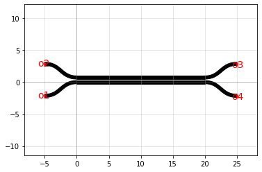
[8]:
# lets see the default parameters for the circuit model
gs.coupler?
[9]:
# lets see the different parameters for the layout
gf.components.coupler?
[10]:
c = gs.coupler(gap=gap, length=length, width=width, dx=dx, dy=dy)
wavelength = np.linspace(1500, 1600, 500)
k = c.predict((1, 4), wavelength)
t = c.predict((1, 3), wavelength)
plt.figure(figsize=(15, 5))
plt.subplot(121)
plt.plot(wavelength, np.abs(k) ** 2, label="k")
plt.plot(wavelength, np.abs(t) ** 2, label="t")
plt.xlabel("Wavelength (nm)")
plt.ylabel("Magnitude Squared")
plt.title("Crossover at $\lambda \approx 1550nm$")
plt.legend()
[10]:
<matplotlib.legend.Legend at 0x7fcc27873340>
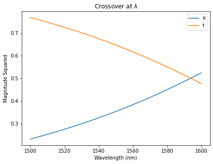
[11]:
hr = gs.coupler()
length = np.linspace(1, 70, 100) * 1e3
wavelength = 1550
hr.update(length=length)
k = hr.predict((1, 4), wavelength)
t = hr.predict((1, 3), wavelength)
plt.figure(figsize=(15, 5))
plt.subplot(121)
plt.plot(length / 1e3, np.abs(k) ** 2, label="k")
plt.plot(length / 1e3, np.abs(t) ** 2, label="t")
plt.xlabel("length (um)")
plt.ylabel("Magnitude Squared")
plt.title("Crossover at $\lambda \approx 1550nm$")
plt.legend()
plt.subplot(122)
plt.plot(length / 1e3, np.unwrap(np.angle(k)), label="k")
plt.plot(length / 1e3, -np.unwrap(np.angle(t)), label="t")
plt.xlabel("length (um)")
plt.ylabel("Magnitude Squared")
plt.title("Crossover at $\lambda \approx 1550nm$")
plt.legend()
[11]:
<matplotlib.legend.Legend at 0x7fcc276b1610>

Reproducing numbers from thesis page 88
[12]:
hr = gs.coupler(length=10, gap=0.25, width=0.450)
length = np.linspace(1, 45, 100) * 1e3
wavelength = 1550
hr.update(length=length)
k = hr.predict((1, 4), wavelength)
t = hr.predict((1, 3), wavelength)
plt.figure(figsize=(15, 5))
plt.subplot(121)
plt.plot(length / 1e3, np.abs(k) ** 2, label="k")
plt.plot(length / 1e3, np.abs(t) ** 2, label="t")
plt.xlabel("Wavelength (nm)")
plt.ylabel("Magnitude Squared")
plt.title("Crossover at $\lambda \approx 1550nm$")
plt.legend()
plt.subplot(122)
plt.plot(length / 1e3, np.unwrap(np.angle(k)), label="k")
plt.plot(length / 1e3, -np.unwrap(np.angle(t)), label="t")
plt.xlabel("length (um)")
plt.ylabel("Magnitude Squared")
plt.title("Crossover at $\lambda \approx 1550nm$")
plt.legend()
[12]:
<matplotlib.legend.Legend at 0x7fcc275a4100>
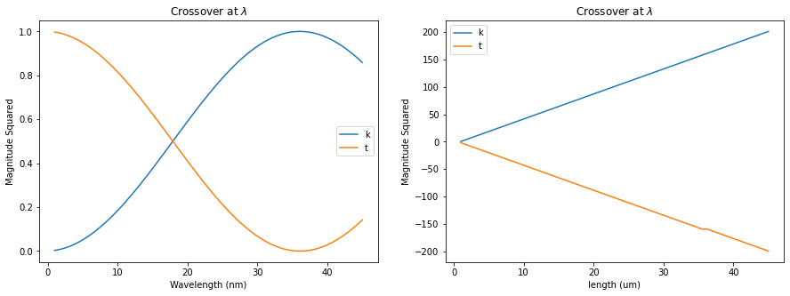
[13]:
hr = gs.coupler(length=10, gap=0.13, width=0.5)
length = np.linspace(1, 45, 100) * 1e3
wavelength = 1550
hr.update(length=length)
k = hr.predict((1, 4), wavelength)
t = hr.predict((1, 3), wavelength)
plt.figure(figsize=(15, 5))
plt.subplot(121)
plt.plot(length / 1e3, np.abs(k) ** 2, label="k")
plt.plot(length / 1e3, np.abs(t) ** 2, label="t")
plt.xlabel("Wavelength (nm)")
plt.ylabel("Magnitude Squared")
plt.title("Crossover at $\lambda \approx 1550nm$")
plt.legend()
plt.subplot(122)
plt.plot(length / 1e3, np.unwrap(np.angle(k)), label="k")
plt.plot(length / 1e3, -np.unwrap(np.angle(t)), label="t")
plt.xlabel("length (um)")
plt.ylabel("Magnitude Squared")
plt.title("Crossover at $\lambda \approx 1550nm$")
plt.legend()
[13]:
<matplotlib.legend.Legend at 0x7fcc2748aca0>
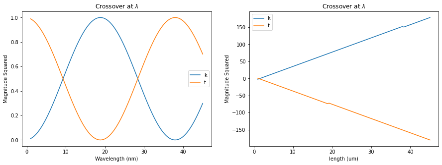
[14]:
c50 = gs.coupler(length=18, gap=0.25, width=0.45)
wavelength = np.linspace(1500, 1600, 500)
k = c50.predict((1, 4), wavelength)
t = c50.predict((1, 3), wavelength)
plt.figure(figsize=(15, 5))
plt.subplot(121)
plt.plot(wavelength, np.abs(k) ** 2, label="k")
plt.plot(wavelength, np.abs(t) ** 2, label="t")
pltAttr("Wavelength (nm)", "Magnitude Squared", "Crossover at $\lambda \approx 1550nm$")
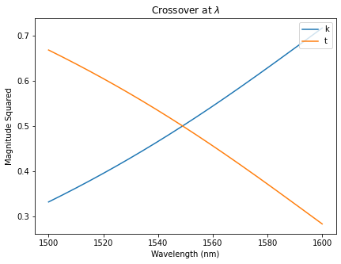
[15]:
import numpy as np
import matplotlib.pyplot as plt
hr = gs.coupler_ring(length_x=2e3, width=0.45)
gap = np.linspace(0.5, 3, 40) * 1e3
wavelength = 1550
hr.update(gap=gap)
k = hr.predict((1, 4), wavelength)
t = hr.predict((1, 3), wavelength)
plt.figure(figsize=(15, 5))
plt.subplot(121)
plt.plot(gap / 1e3, np.abs(k) ** 2, label="k")
plt.plot(gap / 1e3, np.abs(t) ** 2, label="t")
plt.xlabel("coupler gap (nm)")
plt.ylabel("Magnitude Squared")
plt.title("2 mm coupling $\lambda=1550$")
[15]:
Text(0.5, 1.0, '2 mm coupling $\\lambda=1550$')
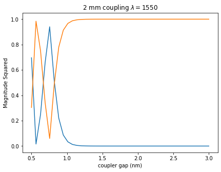
[16]:
c = gs.coupler_ring(length_x=20, wg_width=0.45, gap=0.45)
wavelength = np.linspace(1500, 1600, 500)
k = c.predict((1, 4), wavelength)
t = c.predict((1, 3), wavelength)
plt.figure(figsize=(15, 5))
plt.subplot(121)
plt.plot(wavelength, np.abs(k) ** 2, label="k")
plt.plot(wavelength, np.abs(t) ** 2, label="t")
plt.ylabel("Magnitude Squared")
[16]:
Text(0, 0.5, 'Magnitude Squared')
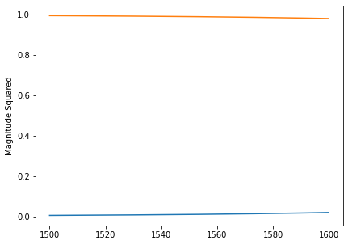
[17]:
plt.plot(wavelength, np.abs(k) ** 2 * 100, label="k")
plt.ylabel("Coupling (%)")
plt.xlabel("wavelength (nm)")
plt.title("20um long 450nm wide 450nm gap straight waveguides")
[17]:
Text(0.5, 1.0, '20um long 450nm wide 450nm gap straight waveguides')

[ ]: